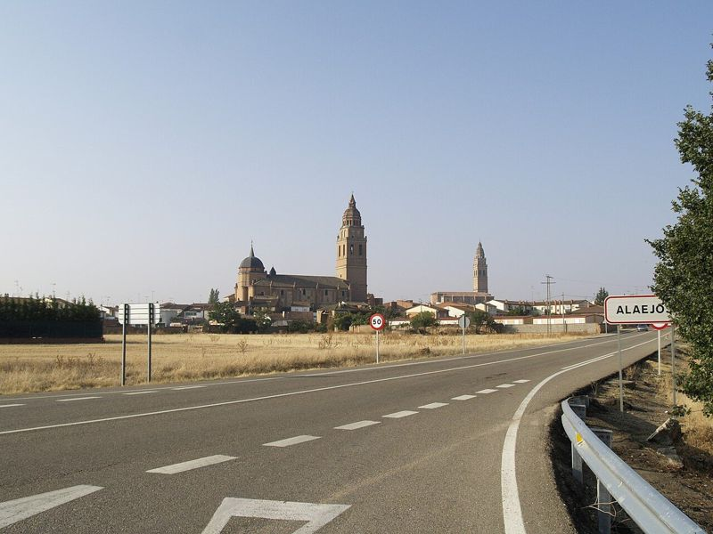

El vino de Alaejos
En el siglo XVI el blanco de Alaejos se bebía en la Corte, se recetaba a los enfermos y lo citaban Cervantes y Quevedo. Tres siglos después apenas quedaban viñas. Historia de una gloria y de una decadencia.
En esta página (5 apartados · 5 min de lectura)
Cuando Sebastián de Covarrubias definió Alaejos en su Tesoro de la lengua castellana (1611), no habló del castillo ni de las iglesias: «villa ilustre, nombrada entre otras razones por el buen vino que en ella se hace y en Coca». Durante el siglo XVI y parte del XVII el vino fue la principal riqueza de la villa, y el que pagó, en buena medida, la construcción de sus dos grandes templos.
El siglo de oro del vino


.JPG){kind=link}
El geógrafo francés Alain Huetz de Lemps, que recorrió la cuenca del Duero entre 1953 y 1965 para escribir su gran obra sobre los viñedos del noroeste de España, cita una y otra vez el vino de Alaejos. Algunos de sus datos, que recogió Adelio Castaño (programa de 1982):
- Un documento del 23 de agosto de 1582 cuenta, entre los vinos que se consumían en la Corte, los de Medina del Campo, Alaejos y Madrigal de las Altas Torres.
- En 1583 Bilbao tenía tres tabernas de vino blanco y abrió una cuarta para vender vino «regalado» a los enfermos, que debía venir de San Martín de Valdeiglesias, Medina, Madrigal o Alaejos. Según Huetz, los burgueses de las ciudades del norte se hacían pasar por enfermos para poder beber el vino de Rueda y Alaejos.
- En 1597 los taberneros se quejaban de que los negociantes de Medina y Alaejos les vendían el vino peor y reservaban el mejor para los «arrieros de la Montaña», que lo pagaban a precios excesivos.
- En 1599 llegaron a Palencia 63 carretas con 566 odres de blanco de Alaejos: más de 63.000 litros.
El vino viejo, el trasañejo, llegó a tener fama de medicinal, y mientras las ciudades solían prohibir la venta de vino forastero para dar salida al suyo, el blanco de Alaejos era a menudo la excepción. A finales del siglo XVI la mitad del término estaba plantada de vides (José Ojeda Nieto, programa de 2003). Por eso las ordenanzas de la villa lo protegían con tanto celo: nadie vendimiaba hasta que lo mandaba el Regimiento, y meter vino de Toro, Castronuño o La Nava para venderlo como de Alaejos costaba 10.000 maravedís.
El vino en la literatura
La fama del vino quedó escrita en los clásicos, como recogió Teresa Mangas Lucas (programa de 2008):
- Cervantes, en El licenciado Vidriera: en una hostería de Génova, después de nombrar los mejores vinos de Italia, el huésped se ofrece a hacer aparecer allí, «real y verdaderamente», a Madrigal, Coca y Alaejos.
- Quevedo, en un romance burlesco: «los paños franceses no abrigan lo medio / que una santa bota de lo de Alaejos». En la edición antigua se lee «Alarejos».
- Tirso de Molina, que en La fingida Arcadia hace pasar a un criado por médico con un linaje de nombres de viña.
- El refranero: «Vino de Alaejos, que sustenta niños y viejos».
Bodegas y lagares
Casi todas las casas tenían su bodega excavada en el subsuelo y muchas su lagar. Todavía a mediados del siglo XIX el Diccionario de Madoz describía 860 casas de piso bajo «con bodegas secas y hermosas, que hacen exquisitos vinos» (extracto de Azucena Hernández Amez, programa de 1991). Adolfo M. Araujo recordaba las piedras cilíndricas de los lagares de viga, «numerosos en Alaejos», que se ven reutilizadas en esquinas y corrales (programa de 2010). Y en su testamento uno de los Fonseca ya mandaba «cerrar y cegar ciertas bodegas que están alrededor del castillo viejo».
Las bodegas tenían también su lado oscuro. En 1663 el médico Andrés de Villamediana culpaba de los carbuncos que sufría la villa a «las aguas corrompidas de las bodegas» del arrabal, y pedía limpiarlas y no arrojar en ellas animales muertos.
La decadencia
Desde mediados del siglo XVII se juntaron varias desgracias: la ruina de las ferias de Medina, la pérdida de calidad por la mezcla con mosto forastero, la crisis general y, sobre todo, la competencia de vinos más jóvenes y baratos de Rueda, La Seca, Serrada o Nava del Rey, que además estaban más cerca de los caminos de la Corte. Las cuentas de las viñas de don Pedro Villafañe entre 1711 y 1714, que estudió José Ojeda Nieto, muestran que solo uno de esos cuatro años dio beneficio: en 1712 el pedrisco echó a perder la cosecha y el vino se agrió y hubo que derramarlo (programa de 2003).
En 1792 los propios vecinos reconocían que, «con motivo de los nuevos plantíos de Rueda, La Seca y demás pueblos», la cosecha no llegaba «a una quinta parte de lo que antiguamente se cogía». El cereal fue ocupando el lugar de las viñas.
| Año | Viñedo | Vino | Fuente |
|---|---|---|---|
| h. 1590 | La mitad del término | — | Ojeda, 2003 |
| 1751 | 5.007 obradas de 20.302, una cuarta parte | 7.247 hl | Catastro de Ensenada, según Castaño, 1982 |
| 1792 | — | Menos de la quinta parte que antes | Declaración de los vecinos, según Ojeda, 2003 |
| h. 1845 | 500 obradas de 23.430 | 50.000 cántaros, unos 8.000 hl | Madoz |
| 1884 | 1.000 ha | 3.200 hl | Huetz de Lemps, según Castaño, 1982 |
| 1952 | 375 ha, menos del 2 % del término | «Muy escasa» | Victoriano Braña, según Castaño, 1982 |
| 1982 | 10,8 ha de verdejo | — | Plan experimental de la Diputación |
A partir de la segunda mitad del siglo XIX llegaron las plagas: el oídio entre 1855 y 1862, el mildiu en 1884 y, finalmente, la filoxera, que arruinó las pocas viñas que quedaban. En 1982 la Diputación Provincial eligió a Alaejos, por su pasado, para plantar 10,8 hectáreas de verdejo dentro de un plan experimental. Hoy el término está incluido en la zona de producción de la Denominación de Origen Rueda.
Para seguir leyendo
- En la biblioteca de los programas: Adelio Castaño, «Gloria y decadencia del vino de Alaejos» (1982); José Ojeda Nieto, «El vino en el siglo XVIII: producción y rendimiento» (2003); Teresa Mangas Lucas, «Los vinos de Alaejos en la literatura del siglo XVI» (2008).
- Alain Huetz de Lemps, Vignobles et vins du Nord-Ouest de l'Espagne (Burdeos, 1967).
Cómo citar esta página
Amigos de Alaejos, «El vino de Alaejos», https://www.amigosdealaejos.org/historia-del-pueblo/el-vino-de-alaejos/ (revisión del 15/11/2026).